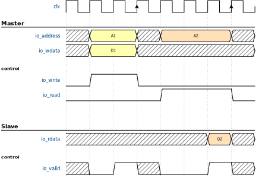

groups¶
jsonml
yaml
toml


set the content of the file to
then generate an image with undulate
undulate -f svg -i step_4_dig.json -o step_4_dig.svg
set the content of the file to
then generate an image with undulate
undulate -f svg -i step_4_dig.yaml -o step_4_dig.svg
set the content of the file to
then generate an image with undulate
undulate -f svg -i step_4_dig.toml -o step_4_dig.svg